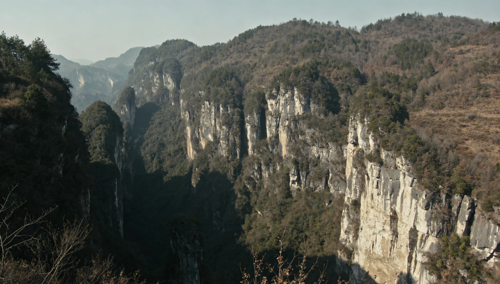

临天崖景区是浙江省湘水市核心的国家3A级景区，坐落于湘水市西部深山，地处浙西南山地余脉之巅，因崖顶临空接云、可远眺天际而得名，是浙江山地风光与浙西民俗文化交融的代表性景点。
区位与概况
景区总面积约12平方公里，山地占比极高，主峰临天崖海拔1120米，崖壁陡峭如削，垂直落差达300余米。植被覆盖率85%，四季景致分明：春日杜鹃漫坡，夏日林海消暑，秋日丹枫似火，冬日雾凇晶莹。山间溪瀑交织，雨季飞瀑垂挂，空气负氧离子含量高，是天然的生态氧吧。
核心景点
- 望云台：崖顶地标观景台，是观赏日出、云海、晚霞的绝佳点位，晴日可远眺浙西南层峦与湘水市散落的山居村落。
- 凌云栈道：沿悬崖峭壁修建的悬空步道，全长800余米，行走时步步惊心，可近距离观赏崖壁奇石、岩生植被与飞瀑流泉。
- 静心古寺：始建于明末的古刹，藏于崖腰密林间，香火绵延，是祈福静心、欣赏浙派古建的好去处。
- 临崖民俗村：山脚原住民村落，保留浙西山民传统生活方式，可尝腊肉、灰汁团、米豆腐等农家菜，体验竹编、土布纺织、畲族彩带编织等非遗手工。
游玩贴士
- 开放时间：8:00–17:30（冬季17:00闭园）
- 交通：湘水市客运中心有景区专线班车；自驾沿山区旅游公路可达山脚生态停车场
- 安全提示：栈道、登山步道注意防滑；山区天气多变，备雨具与薄外套
- 周边：可串联湘水市其他3A景区，适合2–3天的浙西南山地生态文化短途游。

文化底蕴
临天崖流传着诸多浙西山乡传说，当地山民视崖顶为“离天最近之处”，自古有祭祀祈福传统。近代亦有红军游击的红色足迹，景区内设有小型红色文化陈列点，供游客了解那段烽火岁月。
临天崖景区，以雄奇的山崖风光、淳朴的民俗风情与深厚的人文底蕴，热忱欢迎八方游客前来探访。
浙江省湘水市·临天崖3A级旅游景区 门票信息
一、票价信息
- 成人票：60元/人
- 学生票（凭学生证）：30元/人
- 儿童票（1.2米–1.5米）：30元/人
- 1.2米以下儿童、70周岁以上老人：免票
二、开放时间
- 旺季（4月–10月）：07:30–18:00
- 淡季（11月–3月）：08:00–17:30
- 如遇暴雨、台风、泥石流等恶劣天气，景区将临时关闭。
三、使用说明
- 门票当日有效，一经售出，不予退换。
- 凭票入园，一人一票，打孔作废。
- 门票含景区基础游览，不含索道、观光车、讲解等二次消费。
四、游览须知
- 景区多悬崖、陡坡、栈道，禁止攀爬、翻越护栏。
- 雨季山路湿滑、易发生落石，请注意脚下安全，听从工作人员引导。
- 禁止携带易燃易爆物品、大功率电器进入景区。
- 爱护环境，禁止烟火，保护山林植被。
- 如遇紧急情况，请拨打景区救援电话。
五、联系方式
- 景区咨询：057X–XXXX9494
- 救援电话：057X–XXXX9494
- 地址：浙江省湘水市临天崖景区